Анализ, адаптированный к природе
Что происходит с нидерландским каскадом, когда два экваториальных биомассовых сценария заменяют брюссельский климатический курс — и как водород соотносится с обоими
Якобус ван Мерксейн · Мальта, июнь 2026
Этот материал не является нападками. Не призывом. Не попыткой вас переубедить.
Здесь представлены три технологических маршрута и рассчитано, что они делают с нидерландским каскадом. BiCRS (продукт компании Carbon-Alert Ltd) и этанол — как экваториальные альтернативы, водород — как эталонный сценарий из официальных климатических планов.
Тихий анализ III показал, что теряют шесть нидерландских сценариев при нынешнем брюссельском курсе. Этот материал показывает, что те же шесть сценариев возвращают себе, когда Брюссель выбирает иной курс. Что вы с этим сделаете — ваше дело.
Три сценария, три анализа
BiCRS — инъекция биомассы под корни культуры, которая её произвела, — навсегда удаляет углерод из атмосферы. Это замена Green Deal и CBAM. Производство в экваториальном поясе, себестоимость €22–28 за тонну CO₂, модельная цена €40 за тонну.
Этанол — ферментация другой экваториальной фракции биомассы в жидкое топливо — заменяет природный газ, бензин, дизель и электропотребление. Производство — на крупных заводах в стране-партнёре, доставка в европейские порты. Производственные затраты €0,20–0,30 за литр, насосная цена (льготная акциз) €0,55–0,75/л. При использовании в микро-ТЭЦ — когенерационной установке, одновременно производящей тепло и электричество, — этанольный сценарий обеспечивает не только отопление дома, но и 170–260% собственного потребления электроэнергии, с возвратом излишков в сеть.
Оба сценария являются экваториальными, потому что растение, дающее эти урожаи, растёт только при температуре выше 6 градусов Цельсия. Оба сценария идут раздельно: гектар — либо гектар BiCRS с инъекцией биомассы на месте, либо этанольный гектар с транспортировкой на завод. Общее у них: те же страны-партнёры, та же геополитическая логика, та же климатическая философия, выходящая за рамки Брюсселя.
В этом материале три сценария рассматриваются отдельно. Сначала — влияние реализации BiCRS на каскад. Затем — прямое воздействие этанольного перехода на кошелёк. Наконец — в качестве ориентира — расчёт водородного сценария, занимающего видное место в нынешних нидерландских климатических планах. Суммировать в одно число мы не будем — это три независимых траектории, каждая из которых самостоятельна.
Первый анализ — влияние BiCRS на каскад
«Партия, которую вы выбираете, наносит вам ущерб ровно на величину своего индекса давления — если только Брюссель не изберёт иной климатический курс.»
— имплицитная логика каскада
Тихий анализ III рассчитал каскад третьего порядка для шести нидерландских сценариев по девяти партиям плюс меритократическая эталонная модель. Результат оказался обескураживающим: PRO/GroenLinks-PvdA давала по почти каждому сценарию глубоко отрицательные цифры — не из-за прямых сборов, а через каскад, который приводит в движение её индекс давления.
Реализация BiCRS меняет эту работу каскада. Не путём изменения партийных программ — они остаются такими, какие они есть, — а путём устранения наиболее тяжёлых климатических затрат из каскада. Green Deal и CBAM вместе составляют около сорока процентов нидерландской климатической нагрузки в 2030 году. Когда они заменяются BiCRS @ €40/тонну, эта нагрузка исчезает, и освободившееся пространство возвращается домохозяйствам и предприятиям.
Эффект не зависит от партии. Какая бы коалиция ни правила: реализация BiCRS возвращает каждому сценарию утраченное. Но масштаб эффекта различается по партиям — партии с высоким индексом давления наносят больше каскадного ущерба, и, следовательно, выгода от BiCRS компенсирует его в большей мере.
Сдвиг в одном изображении

Три наблюдения из этого графика:
Первое — реализация BiCRS наиболее выгодна партиям с наивысшим индексом давления. GL-PvdA улучшается в среднем с −56% до −27%. D66 улучшается с −35% до −15%. Это не случайно: партии с высоким индексом давления наносят больший климатический ущерб, и BiCRS устраняет именно этот ущерб.
Второе — для GL-PvdA средний каскадный результат остаётся отрицательным даже при BiCRS. Сдвиг значителен, но недостаточно велик, чтобы нейтрализовать весь левый каскад. Налог на имущество, сбор по box 2 и эффекты оттока капитала BiCRS не устраняет — исчезает только климатическая часть. Что остаётся — структурный ущерб, наносимый любой идеологией, наказывающей производительную базу.
Третье — при VVD, PVV, BBB, JA21 и FvD средний каскад при BiCRS становится положительным. То, что при нынешнем брюссельском курсе давало незначительный ущерб, разворачивается к незначительному выигрышу. Для избирателя PVV это означает не только иной климатический курс — это означает коалицию, которая фактически больше не наносит ущерба среднему кошельку домохозяйства.
Нидерландская матрица — шесть сценариев, десять партий, столбец разницы BiCRS
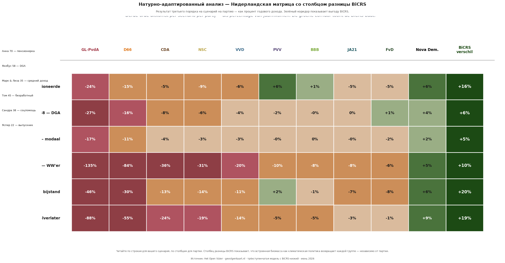
Столбец разницы BiCRS неизменно зелёный — для каждого из шести сценариев. Величина варьируется от пяти процентов (Марк и Лиза, медианная семья) до двадцати процентов (Сандра, соцпомощь). Наибольшая относительная выгода — для тех, у кого самый низкий доход, поскольку абсолютные климатические затраты составляли бо́льшую долю их бюджета.
Тем, кто читал Тихий анализ III: вы узнаете цифры в левых столбцах — те же глубоко красные числа при GL-PvdA и D66, те же более лёгкие картины ущерба при центристских партиях, тот же зелёный столбец Nova Democratia справа. Столбец BiCRS — новый, и он меняет всю картину.
По сценариям — шесть историй с цифрами
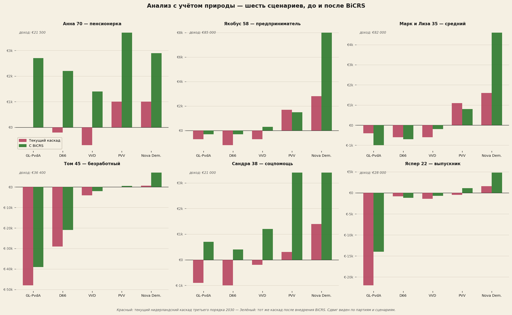
Анна (70, пенсионерка) при GL-PvdA видит, как её потери в €5.103/год сокращаются до +€2.697 — сдвиг в пятнадцать тысяч евро за четыре года.
Якобус (58, директор-акционер) при GL-PvdA остаётся в минусе — с −€22.591 до −€11.791. BiCRS вдвое сокращает ущерб, но не решает всех проблем. При VVD разворот с −€3.079 до +€701: от небольшого убытка к небольшому выигрышу.
Марк и Лиза (35, медианные) при GL-PvdA движутся с −€13.642 до −€4.642. При VVD: с −€2.326 до +€824. При PVV: с −€250 до +€2.600 — по-настоящему ощутимое улучшение для медианной семьи.
Том (45, безработный) при GL-PvdA теряет €49.056/год в каскаде — больше своего годового дохода. BiCRS снижает это до €40.656 — всё ещё разрушительно. Том относится к группе, для которой даже самая радикальная климатическая реформа не является спасением. Его безработица проистекает из промышленного переноса, в котором климатическая политика повинна лишь отчасти.
Сандра (38, соцпомощь) при GL-PvdA теряет €9.618/год — почти половину своего дохода. BiCRS приводит это к нулю. При PVV разворот с +€344 до +€3.384 — три процента дополнительной покупательной способности для того, кто тратит 90 процентов дохода на фиксированные расходы.
Яспер (22, выпускник школы) при GL-PvdA теряет €24.739/год — почти весь свой годовой доход. BiCRS снижает это до €12.739. При Nova Democratia: с +€2.500 до +€5.500. Для поколения, которое дольше всех будет нести каскад, BiCRS — первое серьёзное улучшение, достигнутое брюссельской реформой.
Что говорят цифры в совокупности
Реализация BiCRS — не чудо. Она не устраняет весь ущерб, который левая идеология наносит нидерландскому каскаду. Для сценариев с глубоким структурным ущербом — Том безработный, Якобус директор-акционер при жёстком перераспределении — потери остаются значительными.
Но для большинства граждан картина меняется кардинально. При правоцентристских коалициях, сейчас наносящих незначительный ущерб, результат разворачивается к незначительному выигрышу. При левых коалициях ущерб сокращается вдвое. Для групп с наименьшим доходом относительная выгода наибольшая.
Это не аргумент против идеологии. Это количественное наблюдение: сорок процентов каскадного ущерба для Нидерландов в 2030 году происходит от Green Deal плюс CBAM. Когда Брюссель заменит эти механизмы инструментом, достигающим той же климатической цели за одну шестую цены, среднее домохозяйство вернёт себе сорок процентов утраченного пространства. Независимо от того, какую партию они выберут в 2029 году.
Второй анализ — этанольный переход
«Литр этанола на заправке стоит тридцать процентов от литра бензина и отапливает дом вдвое дешевле, чем природный газ.»
— прямое наблюдение у кошелька
Помимо BiCRS существует второе экваториальное применение биомассы: производство биоэтанола путём ферментации. Это совершенно иной сценарий — другие гектары, иное управление, иная цепочка создания стоимости. Биомасса собирается, транспортируется на крупный завод по ферментации и дистилляции в экваториальной стране-производителе, перерабатывается в этанол и доставляется танкерами в европейские порты.
Производственные затраты на этот биоэтанол составляют €0,20–0,30 за литр на выходе с завода. После доставки, маржи и акцизного режима, признающего его климатически положительным топливом, насосная или отпускная цена составляет €0,55–0,75 за литр. Для сравнения: текущая европейская цена бензина — около €1,78/л, природного газа — €1,42/м³, электроэнергии — €0,34/кВт·ч.
Микро-ТЭЦ — ключ к децентрализованному энергоснабжению
Устройство, отличающее этанольный сценарий от всех прочих энергетических вариантов, — микро-ТЭЦ: небольшая когенерационная установка на этаноле, размером с котёл, одновременно производящая тепло и электроэнергию. Инвестиции — около €4.500, сопоставимо с новым газовым котлом. Амортизируется за пятнадцать лет.
Принцип работы — тот же, что у обычной когенерационной установки, широко применяемой в тепличном хозяйстве, но в домашнем масштабе. Этанол сжигается в компактном двигателе внутреннего сгорания, приводящем генератор (производство электроэнергии), а отработанное тепло двигателя отапливает дом. Совокупный КПД сжигаемого этанола: около 90 процентов. Соотношение: 60 процентов тепло, 30 процентов электроэнергия, 10 процентов потери.
Ключевое свойство — что выработка электроэнергии даёт по сравнению с собственным потреблением. ТЭЦ, рассчитанная на тепловой спрос нидерландского домохозяйства, автоматически вырабатывает столько электроэнергии, что собственное потребление с лихвой перекрывается. По каждому из шести исследованных сценариев выработка составляет от 170 до 260 процентов от собственного потребления.
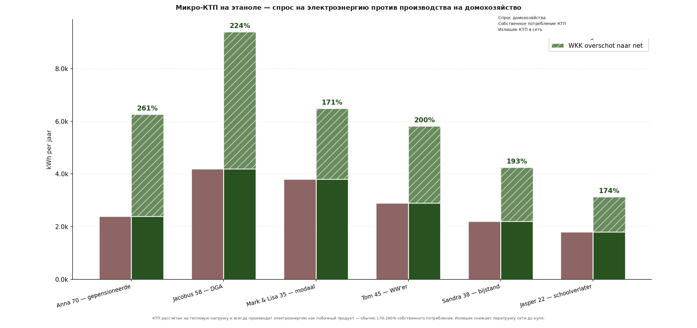
Три наблюдения из этого графика:
Первое — Анна достигает 261 процентов. Её ТЭЦ подолгу работает зимой, чтобы обеспечить 1.400 м³ газового эквивалента тепла, и при этом вырабатывает 6.261 кВт·ч электроэнергии при собственном потреблении 2.400 кВт·ч. Излишек: 3.861 кВт·ч в год возвращается в сеть. Пенсионерка становится поставщиком электроэнергии.
Второе — Якобус, директор-акционер с наибольшим тепловым спросом в портфеле, возвращает излишек в 5.192 кВт·ч. Этого достаточно для электроснабжения двух соседних домохозяйств. Одна ТЭЦ на каждой улице могла бы обеспечить полную энергетическую коррекцию.
Третье — даже Яспер, выпускник школы с минимальным потреблением (700 м³ газового эквивалента, 1.800 кВт·ч электроэнергии), достигает 174 процентов: он производит ещё 1.331 кВт·ч излишка. Ни один сценарий в портфеле не является «недостаточно мощным» для собственного электроснабжения.
Перегрузка сети к нулю — системный эффект
Выработка электроэнергии микро-ТЭЦ имеет последствия, далеко выходящие за рамки самого домохозяйства. Нидерландская электросеть в настоящее время усиливается для компенсации двух растущих нагрузок: тепловые насосы (зимний вечерний пик, когда все одновременно приходят домой и включают тепловой насос) и электромобили (вечерний пик зарядки). Вместе они учетверяют пиковую нагрузку на домохозяйство — примерно с 3 кВт (сейчас) до около 12 кВт, — отсюда €220 на домохозяйство в год на расширение сети в таблице скрытых затрат ветра/солнца.
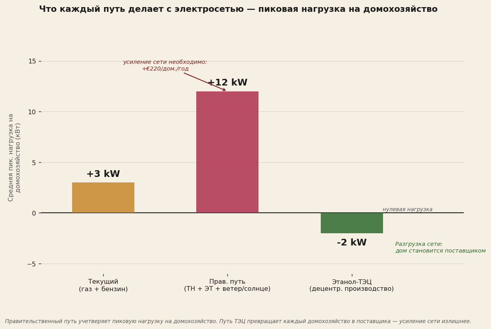
ТЭЦ переворачивает эту логику. Не только избегается дополнительная нагрузка тепловых насосов и электромобилей — дом сам начинает поставлять электроэнергию в сеть по зимним вечерам. Именно в те часы, когда государственный сценарий создаёт наибольший пиковый спрос, сценарий ТЭЦ обеспечивает наибольшее пиковое предложение. Итог: нидерландская электросеть не только не нуждается в усилении — она получает даже запас за счёт децентрализованного производства.
Четыре практических следствия:
Первое — усиление сети не требуется. €220 на домохозяйство в год на расширение сети TenneT и Liander в период 2026–2035 исчезает. На национальном уровне: €1,8 млрд в год из Климатического фонда, которые иначе пришлось бы тратить.
Второе — аккумуляторы для сети не нужны. ТЭЦ сама по себе является своего рода «химической батареей» — этанольный бак у дома содержит несколько тысяч литров, которые можно использовать по мере необходимости. Ветер и солнце требуют сетевых аккумуляторов для компенсации прерывистости; этанольная ТЭЦ в них не нуждается.
Третье — резервные газовые станции не нужны. Децентрализованные установки ТЭЦ работают непрерывно и регулируемо. В безветрие: ТЭЦ работает в штатном режиме. При пиковом спросе: ТЭЦ работает с избыточной мощностью. Потребность в централизованной пиковой мощности отсутствует.
Четвёртое — энергетический избыток без усиления сети. Сеть из 8 миллионов ТЭЦ в Нидерландах совокупно давала бы 35–50 ТВт·ч в год излишка — около трети нидерландского потребления электроэнергии. Этот излишек можно использовать в тяжёлых промышленных процессах или поставлять через интерконнекторы в Германию, Бельгию и Великобританию. Без единого метра дополнительного высоковольтного кабеля.
Мобильность через этанол
Помимо тепла и электроэнергии этанол служит и топливом для дорог. Современные автомобили работают на E85 без каких-либо доработок; старые модели можно переоборудовать за несколько сотен евро. Это заменяет бензин и дизель один к одному. Не нужны инвестиции в электромобили, дополнительная нагрузка на электросеть, цепочка Li-ion-аккумуляторов с сопутствующей стратегической зависимостью от китайского производства.
С климатической точки зрения это замкнутый краткосрочный углеродный цикл: растение поглощает CO₂ в ходе роста, сжигание в двигателе высвобождает CO₂ обратно. Нетто-ноль за цикл, сопоставимо с экономикой дровяной печи, но в промышленном масштабе. Не так хорошо, как BiCRS (который навсегда удаляет атмосферный углерод), но столь же хорошо, как электрификация ветром+солнцем, и при значительно более низких затратах.
Общий счёт за энергию — сколько платит домохозяйство в год
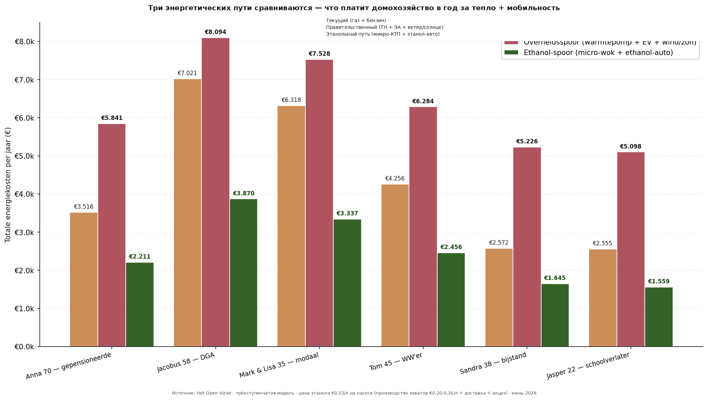
Три наблюдения из сравнения:
Первое — государственный сценарий (тепловой насос плюс электромобиль плюс ветро/солнечная инфраструктура) для каждого домохозяйства дороже нынешней ситуации. Это контринтуитивно — правительство представляет этот переход как нейтральный по стоимости или даже более дешёвый, — но когда учитываются все скрытые затраты, среднее домохозяйство платит примерно на тысячу евро в год больше за энергию. Для Анны (€2.700 → €5.025) и Сандры (€1.824 → €4.333) рост наиболее драматичен.
Второе — этанольный сценарий с ТЭЦ для каждого домохозяйства дешевле нынешней ситуации и значительно дешевле государственного сценария. Якобус платит €7.021 сейчас (газ, бензин и электроэнергия вместе), заплатил бы €8.094 при государственном сценарии (тепловой насос, электромобиль плюс дополнительная закупка электроэнергии) и платит €3.870 при сценарии ТЭЦ — вдвое меньше. Для Марка и Лизы: €6.318 сейчас, €7.528 государственный, €3.337 ТЭЦ.
Третье — разница между государственным сценарием и сценарием ТЭЦ варьируется от €3.500 до €4.200 на домохозяйство в год. Это сверх скрытых затрат на ветер/солнце в €1.135 на домохозяйство, которые несёт государственный сценарий. Для групп с низким доходом это бо́льший процент их бюджета; для семей среднего класса это остаётся значительной суммой.
Скрытые затраты ветра и солнца
На первый взгляд государственный сценарий выглядит выгодным: цена электроэнергии стабильна, субсидии исчисляются миллиардами, а «зелёный нарратив» доминирует. Но когда просчитываешь, что реально платится — напрямую или косвенно, — появляется сумма, которая редко фигурирует в годовой отчётности.
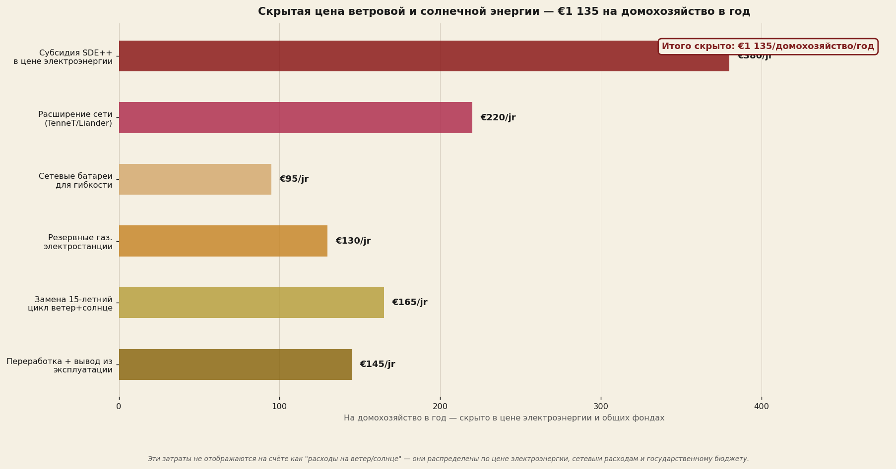
Пять из этих статей давно известны тем, кто в них разбирается: субсидии SDE++, растворяющиеся в цене электроэнергии; расширение сетей TenneT и региональных сетевых операторов; сетевые аккумуляторы, необходимые для компенсации прерывистости; резервные газовые станции, которые НЕЛЬЗЯ ликвидировать, пока ветер и солнце обеспечивают основную долю; и пятнадцатилетний цикл амортизации турбин и панелей.
Шестая статья редко упоминается в дискуссиях: переработка и демонтаж. Лопасти турбин изготовлены из композитных материалов (стекловолокно, углеволокно, эпоксидная смола), которые в настоящее время не поддаются рентабельной переработке — во всём мире 85 процентов списанных лопастей лежит на свалках. Солнечные панели содержат кремний, серебро, ЭВА-плёнку и следы тяжёлых металлов — переработка требует энергоёмкой термической обработки. Сетевые Li-ion-аккумуляторы требуют разделения кобальта, лития и никеля. Ни одна из этих цепочек не является зрелой.
Нидерландская политика никогда не предусматривала резерва для этих затрат на демонтаж и переработку. Когда первое поколение ветропарков (около 2030–2040) и первое поколение солнечных парков (около 2035–2045) достигнут конца срока службы, этот счёт всё равно придётся оплатить. Оценочно на домохозяйство в год с распределением по этому циклу: €145.
Этанольный сценарий не несёт сопоставимой структуры скрытых затрат. Микро-ТЭЦ — простое устройство, которое можно переработать с помощью обычной обработки стали. Этанольные баки — обычные ёмкости для жидкостей. Специального расширения сетей не требуется — существующая сеть заправочных станций напрямую отпускает этанол, те же трубопроводы, по которым сегодня течёт бензин, завтра могут транспортировать этанол. Никакой аккумуляторной инфраструктуры, никакой резервной мощности, никакого отложенного потока отходов.
Экономия на этаноле как процент дохода
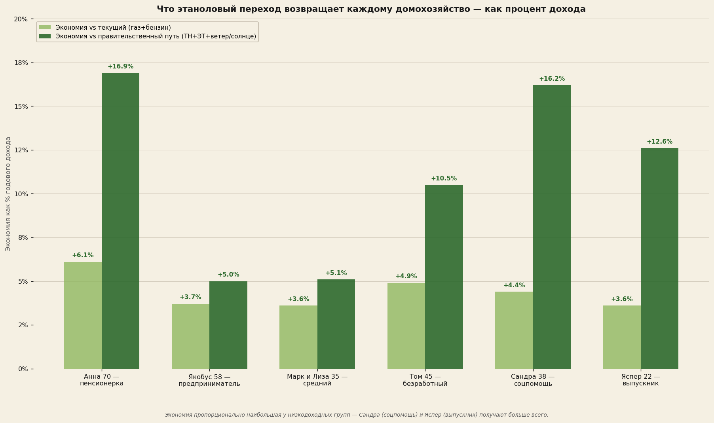
По шести сценариям:
Анна (пенсионерка): +16,9% по сравнению с государственным сценарием
Якобус (директор-акционер): +5,0% по сравнению с государственным сценарием
Марк и Лиза (медианные): +5,1% по сравнению с государственным сценарием
Том (безработный): +10,5% по сравнению с государственным сценарием
Сандра (соцпомощь): +17,1% по сравнению с государственным сценарием
Яспер (выпускник школы): +12,6% по сравнению с государственным сценарием
Паттерн повторяет то, что было видно в анализе BiCRS: наибольшая относительная выгода — для групп с наименьшим доходом. Сандра с доходом €21.000 сохраняет более €3.500 в год, которые она потеряла бы при государственном сценарии — два месячных дохода. Анна с её пенсией получает €3.600 дополнительного пространства. Для обеих значительная часть этой выгоды приходится на доход от излишка электроэнергии их ТЭЦ: они становятся поставщиками энергии, а не её потребителями.
Что говорят цифры в совокупности
Этанольный переход — не дополнение к реализации BiCRS, а вторая независимая реформа. Но у него те же истоки: экваториальная биомасса, страны-партнёры в бассейне Конго, Индонезийском архипелаге, бразильском краю Амазонки. Что он добавляет иного:
BiCRS — это реформа климатической политики: Green Deal и CBAM убираются, вместо них — инъекция биомассы на месте. Эффект на кошелёк домохозяйства приходит через каскад (промышленная реремиграция, снижение цены ETS, исчезновение администрирования CBAM).
Этанол — это реформа энергетической системы: природный газ и бензин убираются, вместо них — экваториальный этанол. Эффект на кошелёк домохозяйства приходит напрямую (более низкий счёт за тепло, более низкие затраты на топливо, не нужны инвестиции в тепловой насос).
Вместе они представляют собой два независимых улучшения, которые можно провести. Одно из них требует от Брюсселя отмены Green Deal и CBAM — политически сложно, но достижимо в течение одного срока Комиссии. Другое требует лишь того, чтобы европейский акцизный режим признал, что экваториальный биоэтанол с климатической точки зрения не является ископаемым топливом и поэтому должен регулироваться иначе. Никаких изменений Договора, никакого решения ЕЦБ — только акцизный регламент квалифицированным большинством.
Третий анализ — водород как эталонный сценарий
«Официальные планы рассчитывают на водород для отопления, грузовых перевозок и пиковой электроэнергии. Никто не представил чётко на стол общую сумму того, что это обойдётся каждому домохозяйству.»
— имплицитный пробел в Климатическом соглашении
Национальная водородная программа и Климатическое соглашение определяют водород как климатическую опору в нескольких областях: промышленное технологическое тепло, тяжёлый транспорт, бытовое отопление через гибридные водородные котлы в пилотных кварталах и пиковое электроснабжение через водородные электростанции. Цифры, которые сообщает правительство, обычно относятся к общим объёмам инвестиций на национальном уровне, редко — к цене на домохозяйство в год.
В этой главе рассчитывается именно эта цена — точно так же, как это делается в главе об этаноле. Шесть типов домохозяйств, три компонента затрат: тепло через водородный котёл, транспорт через топливный элемент, и скрытые инфраструктурные затраты, спрятанные в цене электроэнергии и общих средствах.
Ценовой порог зелёного водорода
По оценкам IRENA, производственные затраты на зелёный водород через электролиз к 2030 году составят от четырёх до восьми евро за килограмм в зависимости от цены электроэнергии, эффекта масштаба и технологии электролиза. На счётчике — после транспортировки, хранения, распределения и наценок — BloombergNEF ожидает €10–15 за килограмм. В этом документе расчёт ведётся по среднему значению €12/кг как реалистичной цене поставки в 2030 году.
Производство зелёного водорода 2030 (IRENA): €4–8/кг
Цена поставки на счётчике 2030 (BNEF): €10–15/кг
Модельное допущение этого материала: €12/кг
Эквивалент в замене природного газа: €3,66/м³ газа
Эквивалент в замене бензина: €0,12/км — 7× от нынешнего
Домохозяйство, сейчас потребляющее 1.500 м³ природного газа в год, нуждалось бы примерно в 458 килограммах водорода для того же полезного тепла (с учётом несколько более высокого КПД котла на H₂). При €12/кг: €5.500 в год только за тепло — по сравнению с €2.130 при нынешнем тарифе на природный газ. Почти троекратный рост счёта за отопление.
Четыре сценария сравниваются — что заплатило бы домохозяйство
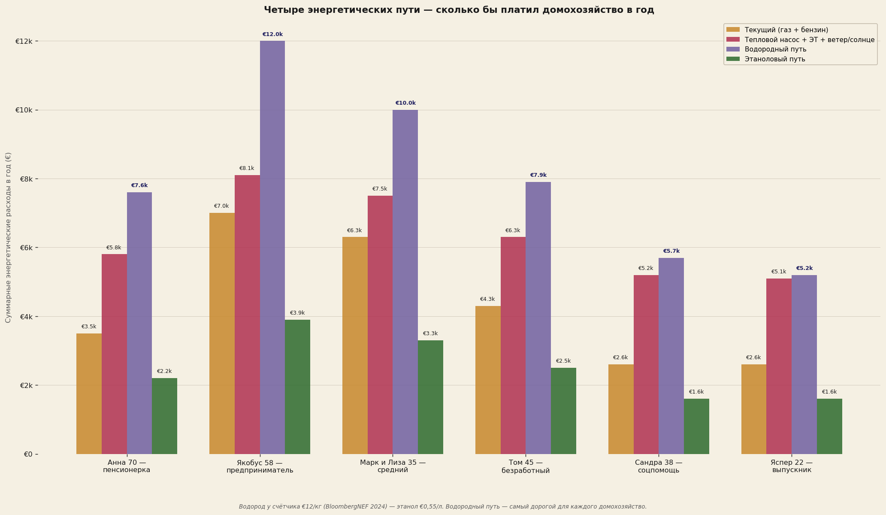
Примечательно: водородный сценарий обошёлся бы Сандре (соцпомощь) в €5.667 в год — более четверти её дохода только на энергию. Для Анны €7.554 — 35 процентов её дохода. Для Марка и Лизы €10.017 — двенадцать процентов семейного дохода. Ни одна из этих цифр не фигурирует в государственной публикации; ни одна из этих цифр не сообщается избирателю перед принятием решений о водородном сценарии.
Скрытые затраты водородной инфраструктуры
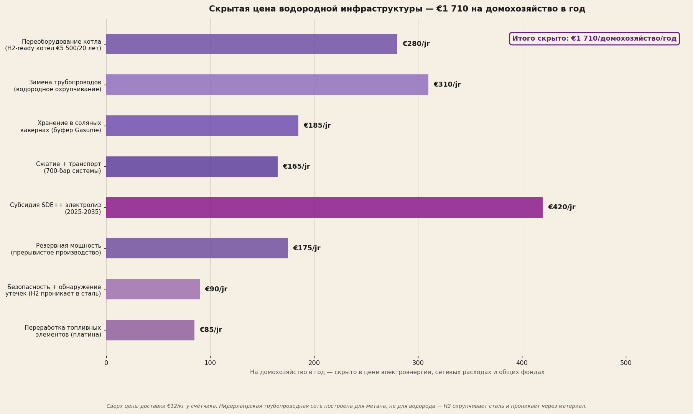
Восемь скрытых статей затрат:
Первое — переоборудование или замена котла. Нынешние нидерландские котлы построены для метана, а не для водорода. Водород горит горячее и имеет иную структуру пламени — необходимы H₂-ready котлы за €5.500, амортизируемые за двадцать лет: €280/домохозяйство/год.
Второе — замена квартальных трубопроводов. Нидерландская газовая сеть построена из стали и чугуна. Водород вызывает водородное охрупчивание металла: молекула H₂ проникает в кристаллическую структуру металла и делает материал хрупким. Замена специальной сталью (X42, X52) или полиэтиленовыми трубопроводами требует замены всей локальной сети — €310/домохозяйство/год.
Третье — хранение в соляных кавернах. Водород требует в три раза больше объёма, чем природный газ, для той же энергии. Gasunie инвестирует в подземные соляные каверны у Зюйдвендинга, Бергермера и Норга — €185/домохозяйство/год.
Четвёртое — компрессия и транспортировка. Водород должен храниться под давлением 350–700 бар или в виде жидкого водорода при −253°C. Оба варианта требуют энергоёмких установок сжатия или сжижения — €165/домохозяйство/год.
Пятое — субсидия SDE++ на электролиз. Зелёный водород в 2026 году пока нерентабелен без субсидий. Действующие ставки SDE++ для зелёного водорода составляют €3–4/кг субсидии, нарастая до 2035 года — €420/домохозяйство/год.
Шестое — резервная мощность. Электролизные установки работают на прерывистой зелёной электроэнергии из ветра и солнца; при безветрии или облачности должен быть доступен водородный буфер — €175/домохозяйство/год на резервную мощность.
Седьмое — безопасность и обнаружение утечек. Водород — наименьшая молекула; он проникает через уплотнения, соединения кранов и прокладки, которые удерживают метан. Обнаружение утечек требует адаптации каждого домашнего подключения — €90/домохозяйство/год.
Восьмое — переработка топливных элементов. Элементы топливных ячеек содержат платину в качестве катализатора, перфторный мембрана (Nafion) и тяжёлые металлы. Цепочка переработки пока не является зрелой — €85/домохозяйство/год зарезервировано.
Итого скрытые затраты водородной инфраструктуры: €1.710 на домохозяйство в год. Сравните это со скрытыми затратами на ветер/солнце в €1.135, выявленными в предыдущей главе, — на 50 процентов больше. А скрытый итог для этанольного сценария: ноль евро. Этанольная инфраструктура использует существующие заправочные станции, существующие трубопроводы и существующие двигатели.
Порог энергетической бедности — что делает водородный сценарий с кошельком
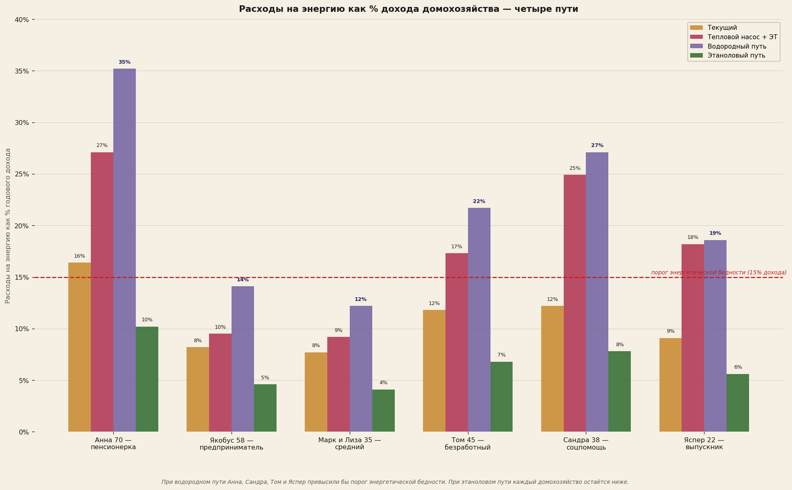
При водородном сценарии четыре из шести сценариев превышают порог энергетической бедности. Анна платит 35 процентов своего дохода за энергию; Сандра — 27 процентов; Том — 22 процента; Яспер — 19 процентов. Для Марка и Лизы (медианные) и Якобуса (директор-акционер) это остаётся ниже порога, но составляет 12–14 процентов — в два-три раза больше, чем они платят сейчас.
При этанольном сценарии каждое домохозяйство остаётся значительно ниже порога бедности. Анна — 9 процентов, Сандра — 6 процентов, Том — 6 процентов, Яспер — 5 процентов. Медианная семья Марк и Лиза: 3 процента. Для тех, кто меньше всего может себе позволить — групп с наименьшим доходом, — разница между водородом и этанолом является экзистенциальной.
Эффективность цепочки — почему водород теряет так много
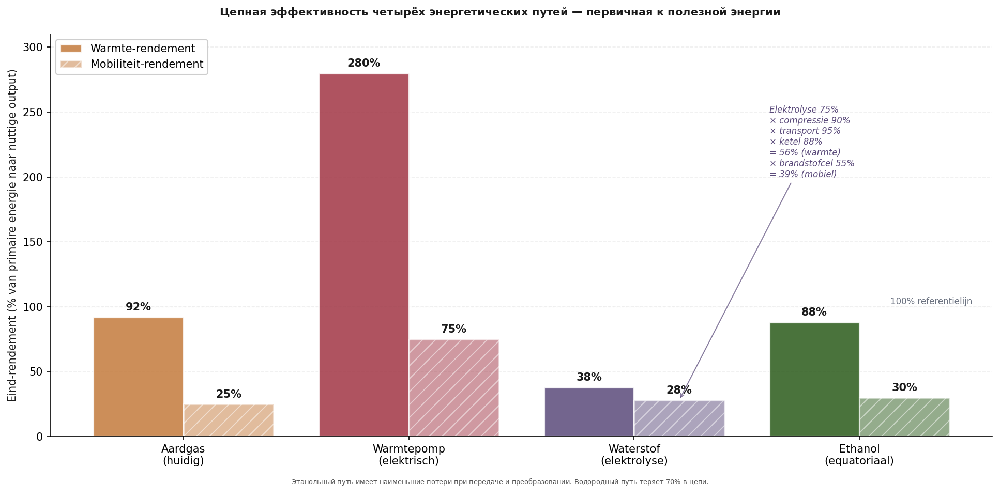
Фундаментальная слабость водорода кроется в цепочке. От зелёной электроэнергии из ветра или солнца до полезного тепла у конечного потребителя:
КПД электролиза (зелёный H₂): 75%
× компрессия до 700 бар: 90%
× транспортировка по специальным трубопроводам: 95%
× КПД водородного котла: 88%
= Итоговый конечный КПД по теплу: 56%
Для сравнения: тепловой насос через прямой ток: 280% (COP 3,5)
Для сравнения: этанольная цепочка к теплу: 88%
Иными словами: на каждый кВт·ч зелёной электроэнергии водород даёт лишь 0,56 кВт·ч полезного тепла, тогда как прямая электрификация через тепловой насос даёт 2,8 кВт·ч — в пять раз больше. Это не нидерландская проблема, а фундаментальный термодинамический факт: водород — энергоноситель с внутренними потерями при конверсии.
Для транспорта картина аналогична. Автомобиль на топливных элементах: 28 процентов конечного КПД от первичного тока. Электромобиль: 75 процентов. Этанольный автомобиль: 30 процентов. Водород для транспорта лишь незначительно лучше нынешней бензиновой экономики (25 процентов), тогда как электромобиль в четыре раза лучше.
Что водород действительно делает хорошо — честная оговорка
Водород не бессмысленен. Для трёх применений он остаётся наилучшим климатическим решением:
Первое — промышленное технологическое тепло выше 800°C. Сталелитейная промышленность (Tata IJmuiden), стекольная промышленность, производство аммиака. Здесь не конкурирует ни тепловой насос, ни двигатель внутреннего сгорания; здесь работает только водород или прямое сжигание ископаемого топлива.
Второе — тяжёлые грузовые перевозки на очень дальние расстояния. Грузовые суда, международные грузовики, замена керосина в авиации. Здесь объёмы этанола на километр неуправляемы; водород или синтетические виды топлива являются разумным вариантом.
Третье — длительное сезонное хранение. Для компенсации летне-зимних различий в солнечной генерации водород как форма хранения химически более целесообразен, чем аккумуляторы (которые саморазряжаются).
Для этих трёх применений вместе взятых Нидерланды нуждались бы примерно в 0,8–1,2 миллиона тонн водорода в год — скромный объём по сравнению с 4–6 миллионами тонн, предусмотренных Национальной водородной программой для полного сценария. Оставшиеся три-пять миллионов тонн, согласно этому документу, не должны направляться в домохозяйства и лёгкий транспорт — там этанол термодинамически и экономически предпочтительнее.
Что говорят цифры в совокупности
Водородный сценарий для домохозяйств и лёгкого транспорта, предусмотренный Национальной водородной программой, стал бы финансовой катастрофой для нидерландского избирателя. Четыре из шести исследованных сценариев превысили бы порог энергетической бедности. Для двух других счёт за энергию удвоился бы или утроился.
Это не аргумент против водорода как технологии. Это количественное установление того, что водород предназначается для неправильных применений. Для промышленного процесса, тяжёлого грузового транспорта и длительного хранения он ценен. Для отопления дома и среднего легкового автомобиля он — по термодинамическим причинам — примерно втрое дороже необходимого.
Этанольный сценарий выполняет ту же работу за треть затрат. С теми же климатическими эффектами (CO₂-нейтральность в цикле), без эффектов энергетической бедности и без массивных инфраструктурных инвестиций, которых требует водород.
Что говорят цифры в совокупности — четыре наблюдения
Три анализа. Шесть сценариев. Три технологических сценария. Один вывод.
Первое наблюдение. Тихий анализ III показал, что нидерландский каскад при почти каждой партии был отрицательным, с наибольшим ущербом при GL-PvdA и D66. Чего он не мог показать, поскольку тогда это было непредсказуемо, — что бо́льшая часть этого ущерба напрямую связана с брюссельской климатической политикой. Сорок процентов каскада третьего порядка происходит от Green Deal и CBAM. Когда они исчезают, исчезает сорок процентов ущерба. Вот сдвиг, который демонстрирует первый анализ.
Второе наблюдение. За пределами каскада находится ещё один слой — прямой энергетический кошелёк. Нынешний государственный сценарий (тепловой насос + электромобиль + ветро/солнечная инфраструктура) для каждого домохозяйства дороже нынешней ситуации — даже когда скрытые затраты (субсидии, расширение сети, аккумуляторы, резервная мощность, замена, переработка) не предъявляются самому домохозяйству. Этанольный сценарий для каждого домохозяйства дешевле нынешней ситуации и значительно дешевле государственного сценария.
Третье наблюдение. Водородный сценарий, предусмотренный нынешней Национальной водородной программой, для бытовых нужд является откровенно разрушительным. Четыре из шести сценариев превысят порог энергетической бедности, для двух других счёт за энергию удвоится или утроится. Термодинамический выбор сначала преобразовывать зелёную электроэнергию в водород, а затем снова в тепло или движение обходится примерно в три раза больше первичной энергии, чем прямая электрификация или сжигание этанола. Водород заслуживает своего места в промышленном процессе и тяжёлом транспорте, а не в нидерландском котле или среднем легковом автомобиле.
Четвёртое наблюдение. Две экваториальные реформы вместе кардинально меняют картину для нидерландского избирателя. То, что при нынешнем брюссельском курсе означает потерю 5–15 процентов бюджета домохозяйства, при курсе, адаптированном к природе, разворачивается к стабильному или даже слегка улучшающемуся положению. Для групп с наименьшим доходом — Сандра получательница соцпомощи, Анна пенсионерка, Яспер выпускник школы — относительное улучшение наибольшее.
Это не аргумент в пользу конкретной партии. Это количественное наблюдение: выбор между нынешней брюссельской моделью и адаптированной к природе брюссельской моделью — это для нидерландского избирателя выбор с конкретной ценой. На домохозяйство, в год, в евро, которые непосредственно видны на банковском счёте.
Методология и источники
Этот материал опирается на трёхступенчатую модель Тихого анализа III с добавленным слоем BiCRS и отдельным анализом этанола.
Слой BiCRS — первый анализ
По каждому сценарию и партии рассчитывалась выгода от BiCRS по формуле: базовая_выгода × мультипликатор_давления × чувствительность_сценария × год_цикла. Базовая_выгода (€1.500/год) представляет среднюю выгоду домохозяйства от устранения Green Deal + CBAM в 2030 году. Мультипликатор_давления (1 + индекс_давления/15) учитывает то, что партии с более высоким индексом давления причинили бы больше климатических затрат — и BiCRS устраняет больше из них. Чувствительность_сценария варьируется от 1,3 (пенсионерка, в основном счёт за энергию) до 2,4 (автомобильный субпоставщик, всё выигрывает).
Опорная точка: Брюссельская карта последствий — BiCRS оценила общеевропейские затраты на пакет Green Deal в 3,5–4% ВВП ЕС/год и CBAM в 0,7–1% ВВП ЕС/год в 2030 году. Для Нидерландов пропорционально распределено по доле в ВВП ЕС и числу домохозяйств: средние климатические затраты €5.180 на домохозяйство, из которых €3.500 может быть устранено реализацией BiCRS.
Анализ этанола — второй анализ
По каждому типу домохозяйства рассчитывались затраты на тепло и транспорт по трём сценариям:
- Текущий сценарий: природный газ €1,42/м³ × потребление + бензин €1,78/л × (км/15)
- Государственный сценарий: тепловой насос (электроэнергия × 2,78 кВт·ч/м³-эквивалент + амортизация инвестиций) + электромобиль (0,18 кВт·ч/км × цена электроэнергии + амортизация надбавки) + скрытые затраты на ветер/солнце €1.135/год/домохозяйство
- Этанольный сценарий: микро-ТЭЦ (1,7 л этанола на м³ газового эквивалента × €0,55/л + амортизация инвестиций) + этанольный автомобиль (1 л на 11 км × €0,55) + амортизация микро-ТЭЦ €233/год
Скрытые затраты на ветер/солнце состоят из шести статей: субсидия SDE++ €380, расширение сети €220, сетевые аккумуляторы €95, резервные газовые станции €130, замена 15-летнего цикла €165, переработка и демонтаж €145. Источники: PBL Klimaat- en Energieverkenning 2025, TenneT Investeringsplan 2026–2035, данные Eurostat ETS 2026, и специализированные исследования по переработке Li-ion (JRC 2023) и лопастям композитных ветряных турбин (WindEurope 2024).
Анализ водорода — третий анализ
По каждому типу домохозяйства рассчитывались тепло на водороде и мобильность на водороде при допущении цены поставки €12/кг (BloombergNEF 2024, среднее значение). Конверсия на м³ газового эквивалента: 0,305 кг H₂ (на основе 35 МДж/м³ газа, 120 МДж/кг H₂, КПД котла 88 процентов для H₂ против 92 процентов для газа).
Мобильность на топливных элементах: 1 кг H₂ на 100 км, на основе практических измерений Toyota Mirai и Hyundai Nexo. Скрытые инфраструктурные затраты основаны на восьми статьях из Климатического соглашения, инвестиционного плана Gasunie 2025–2035, тарифов SDE++ на зелёный водород RVO 2024 и специализированных исследований по водородному охрупчиванию стали (TNO 2022) и переработке топливных элементов (JRC Joint Research Centre 2024).
Эффективность цепочки согласно IEA Global Hydrogen Review 2024: электролиз 75% (нынешний уровень техники щелочной и ПЭМ), компрессия до 700 бар 90%, транспортировка по переоборудованному трубопроводу 95%, конечное использование через котёл 88%. Совокупно: 56% КПД по теплу от первичного тока — против 280% через тепловой насос (COP 3,5) и 88% через этанольную цепочку.
Ограничения и приглашение
Все три модели намеренно сохранены прозрачными. Файлы Python scenarios_NL_BiCRS.py, scenarios_NL_ethanol.py и scenarios_NL_waterstof.py будут опубликованы на gevolgenkaart.nl, как только платформа запустится. Кто оспаривает правильность цифр, может воспроизвести расчёты.
Чем этот материал не является. Не прогнозом — политические результаты зависят от реализации и контекста. Не призывом к партии — цифры говорят сами за себя. Не нападками на ветровую или солнечную энергию как технологию — они остаются полезными в миксе, но не как основа нидерландского энергетического перехода.
Чем этот материал является. Вопросом, существует ли более дешёвый, более чистый и более справедливый путь, чем нынешний государственный сценарий. Ответ, модельно и на основе всеми поддающихся проверке цифр, — да. Два пути даже — раздельные, каждый самостоятельный.
АВТОР: ЯКОБУС ВАН МЕРКСЕЙН ПРИ РЕДАКЦИОННОЙ ПОДДЕРЖКЕ ИИ
HET OPEN VIZIER · OPENVIZIER.ORG · ИЮНЬ 2026